Plots for mu.lpsi
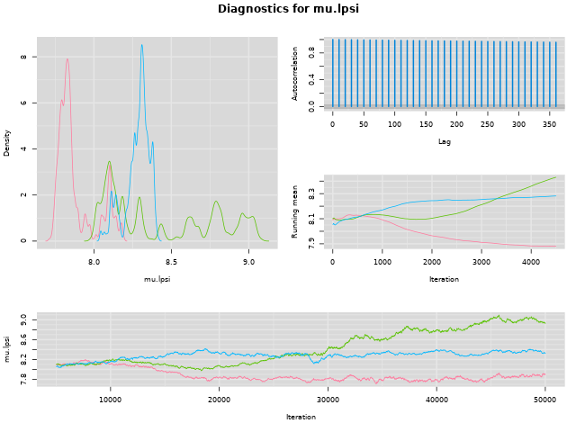Plots for sig.lpsi
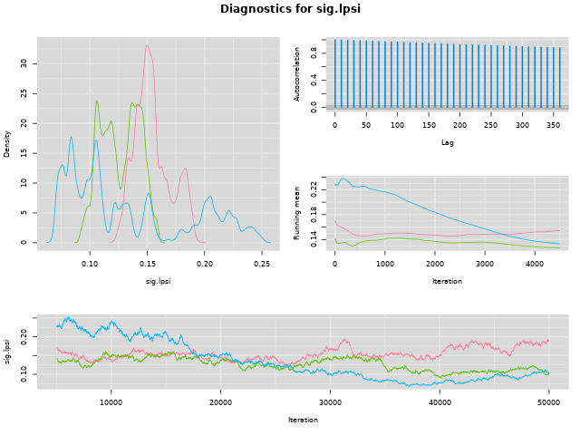Plots for mu.a0
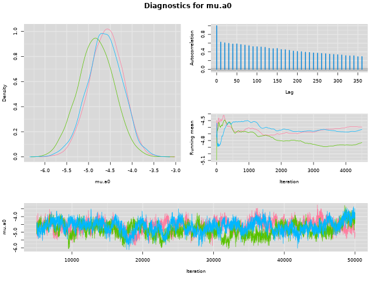Plots for sig.a0
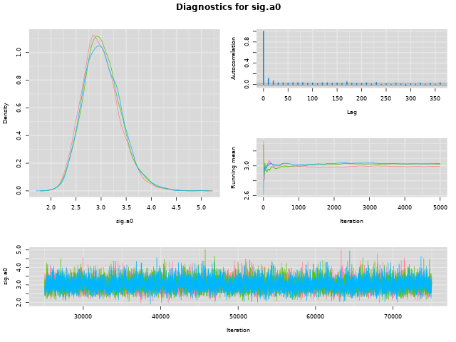Plots for a1.Cover
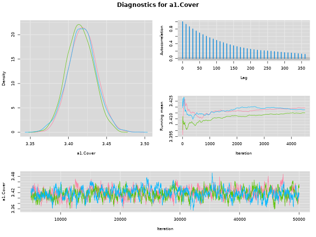Plots for mu.missingcover
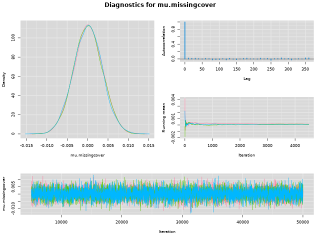Plots for sig.missingcover

Plots for deviance
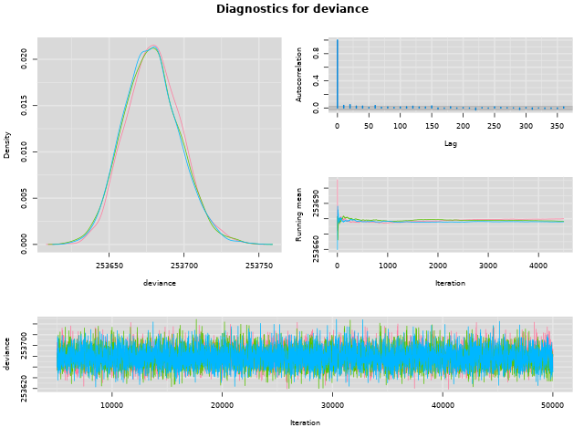Plots for a2.LifeGroup
a2.LifeGroup[1]. Error in bw.SJ(x, method = "ste"): sample is too sparse to find TD
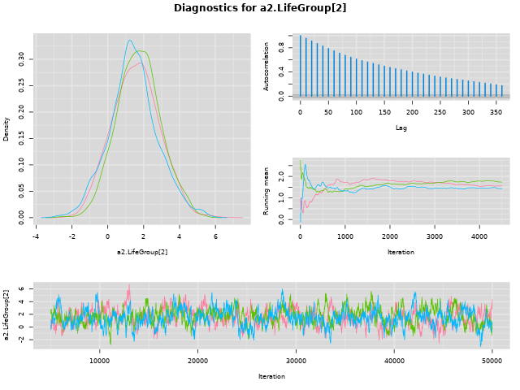 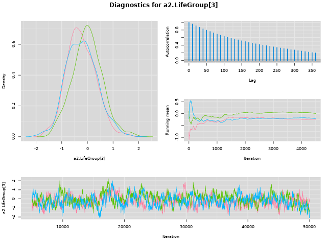 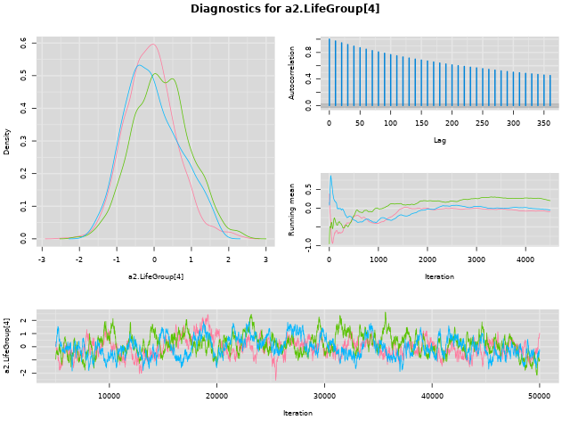 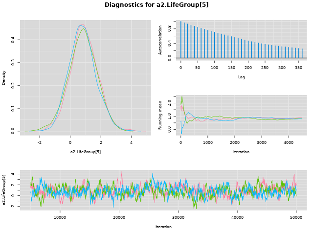 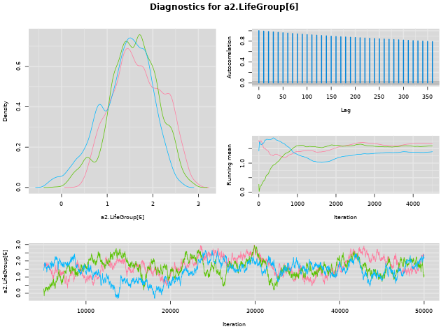 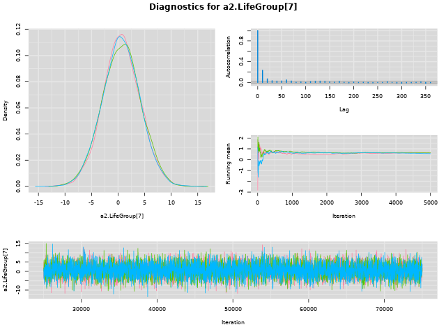 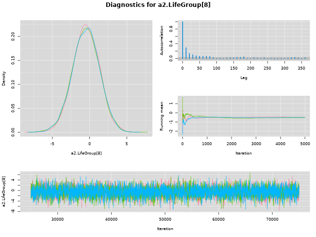 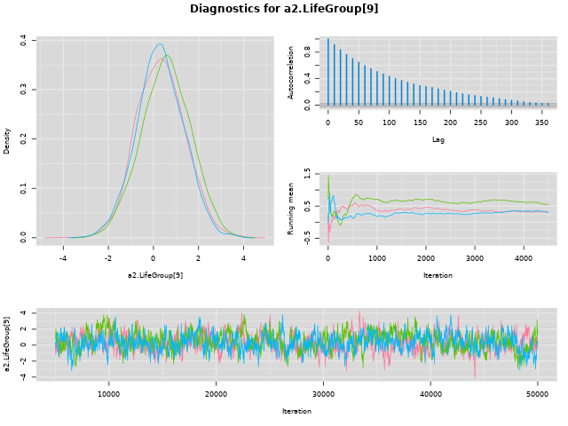 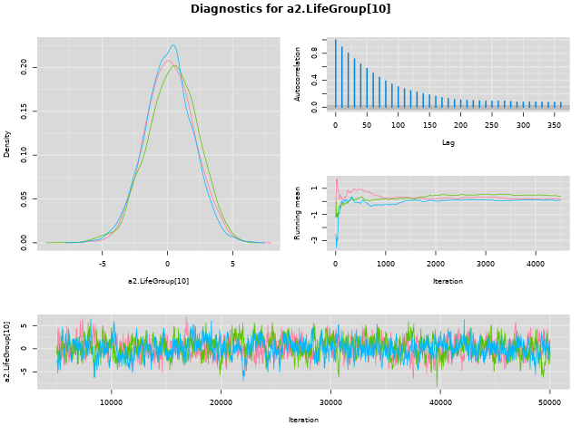